<!doctype html>
<html>
<head>
    <meta charset="utf-8">
    <meta name="viewport" content="width=device-width, initial-scale=1.0, maximum-scale=1.0, user-scalable=no">
    <link rel="stylesheet" href="reveal/css/reveal.css">
    <link rel="stylesheet" href="reveal/css/theme/kontur-dark.css" id="theme">
    <!-- Theme used for syntax highlighting of code -->
    <link rel="stylesheet" href="reveal/css/highlight/idea-for-light.css">
    <link rel="stylesheet" href="reveal/css/highlight/darkula-for-dark.css">
    <!--[if lt IE 9]>
    <script src="reveal/js/html5shiv.js"></script>
    <![endif]-->
    <script defer src="reveal/js/head.min.js"></script>
    <script defer src="reveal/js/reveal.js"></script>
    <script defer src="reveal/initialize.js"></script>
    <script defer src="reveal/js/d3.min.js"></script>

    <title>Программисты, которые играют в игры</title>

    <style>
        .columns {
            display: flex;
        }
        .photoContainer {
            flex-shrink: 0;
            margin-right: 50px;
        }
    </style>
</head>
<body>

<div class="reveal"><div class="slides">

<section data-markdown><script type="text/template">
# Программисты,
## которые играют в игры


---


***


***


***


***


***


---

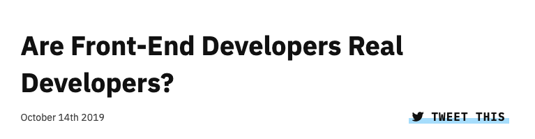

***


***

### Проблемы с самоопределением

- Нет объективной возможности проверить «насколько ты программист»
-

***

### Ожидание от программистов:

 - CS: алгоритмы и структуры данных
 - Паттерны проектирования
 - Хороший код: SOLID, KISS, DRY...
 - ООП и/или ФП


***

### Не только мои ожидания


***

### Фронтендерам не доверяют коллеги

<ul>
    <li class="fragment">Что происходит на бекенде?
    <li class="fragment">Кто проектирует будущее API?
    <li class="fragment">У кого есть доступ к боевой БД?
    <li class="fragment">Кто может сказать, что его мнение влияет на будущее продукта?
</ul>


---


---


---

## Как учиться алгоритмам?


***

### 1. Книги и онлайн-курсы

<div class="fragment">
Плюсы:
<ul><li>структурировано
<li>полно</ul>
</div>
<div class="fragment">
Минусы:
<ul><li>мало практики</ul>
</div>


***

### 2. Сайд-проекты

<div class="fragment">
Плюсы:
<ul><li>куча практики</ul>
</div>
<div class="fragment">
Минусы:
<ul><li>не факт, что пригодится что-то новое
<li class="fragment">сложно придумать идею
<li class="fragment">нет дедлайнов
</ul></div>

***

### 3. Контесты

Внезапное открытие прошлого года

<div class="fragment">
Плюсы:
<ul><li>практика
<li class="fragment">увлекательные и необычные задачи
<li class="fragment">дедлайн
<li class="fragment">соревновательность
</ul></div>
<div class="fragment">
Минусы:
<ul><li>соревновательность</ul>
</div>


---

## Как я до такого докатилась

***


***


***


***


***


***


***


***


***


***


---

## Контесты

---

## Advent Of Code

***

### Advent Of Code

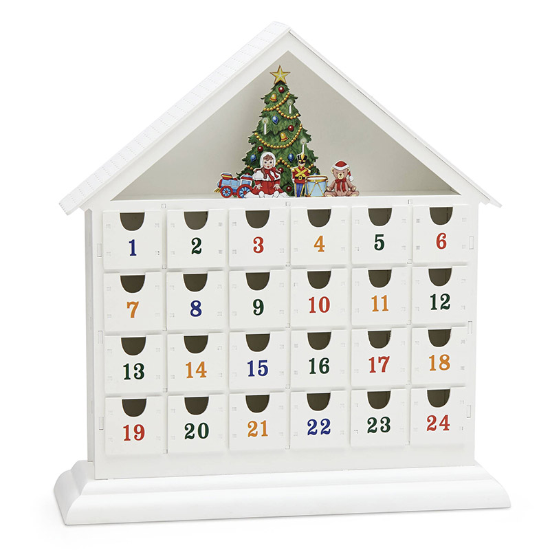

***

### Advent Of Code


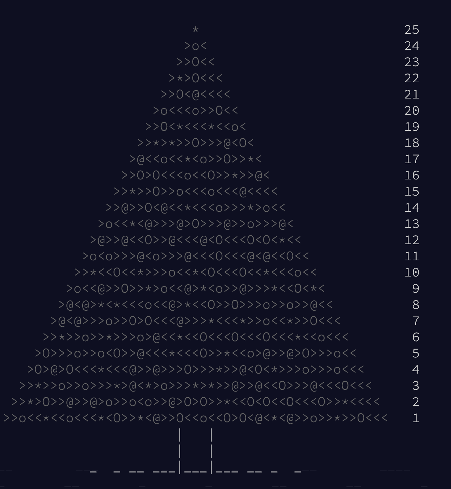


***

### Advent Of Code


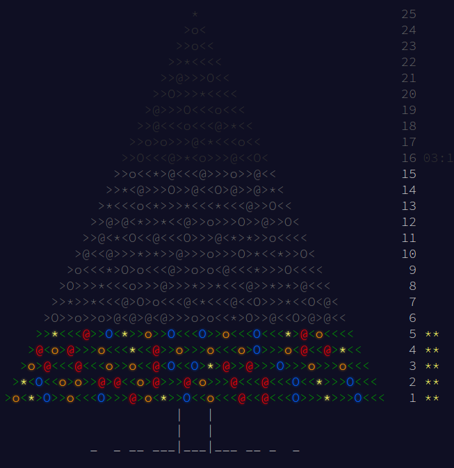

***

### AoC: пример задачи

```
initial state: #..#.#..##......###...###

...## => #
..#.. => #
.#... => #
.#.#. => #
.#.## => #
.##.. => #
.#### => #
#.#.# => #
#.### => #
##.#. => #
##.## => #
###.. => #
###.# => #
####. => #
```

***

### AoC: пример задачи

*Первая задача*
After 20 generations, what is the sum of the numbers of all pots which contain a plant?

Your puzzle answer was `1696`.

<div class="fragment">
*Вторая задача*
After fifty billion (50000000000) generations, what is the sum of the numbers of all pots which contain a plant?

Your puzzle answer was `1799999999458`.
</div>

***

### AoC: в чем польза?

<ul>
<li class="fragment">приходится писать эффективные решения
<li class="fragment">нет соревнования
<li class="fragment">новогоднее настроение 🎄🥂🎅🎁
</ul>

---

## CodinGame

***

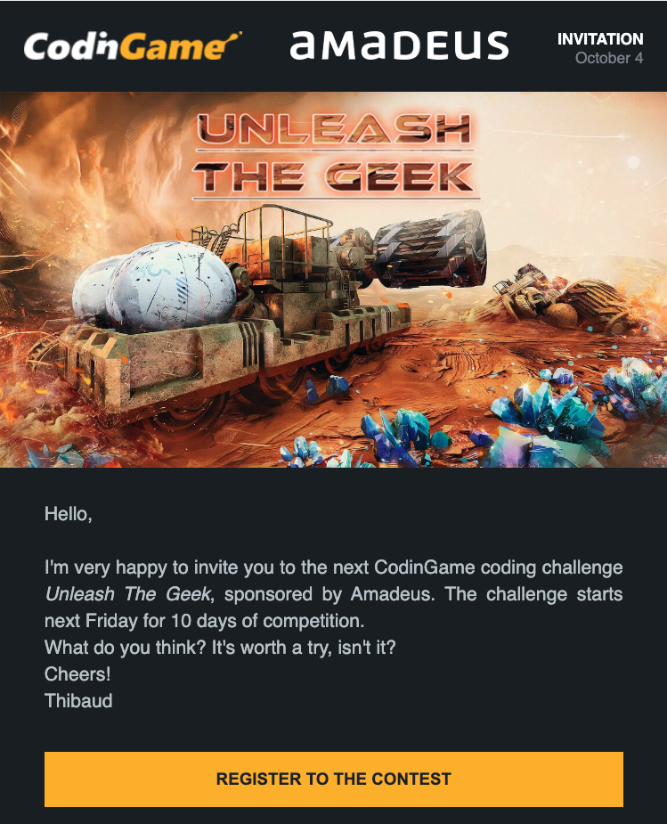

***


***


***


***


***


***

### CodinGame Contest

<ul>
<li class="fragment">красочная задача
<li class="fragment">написание ботов
<li class="fragment">обычно 3-10 дней
<li class="fragment">разделение на лиги
</ul>


***

### Контест «Unleash the geek»

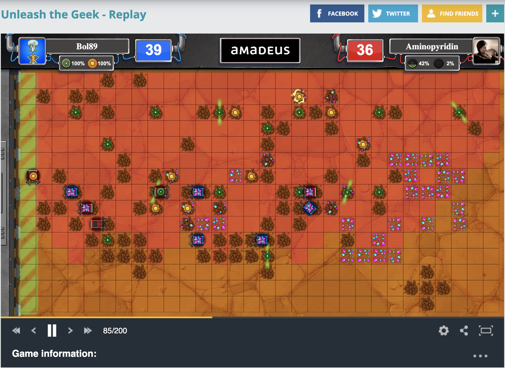

***

### Контест «Unleash the geek»

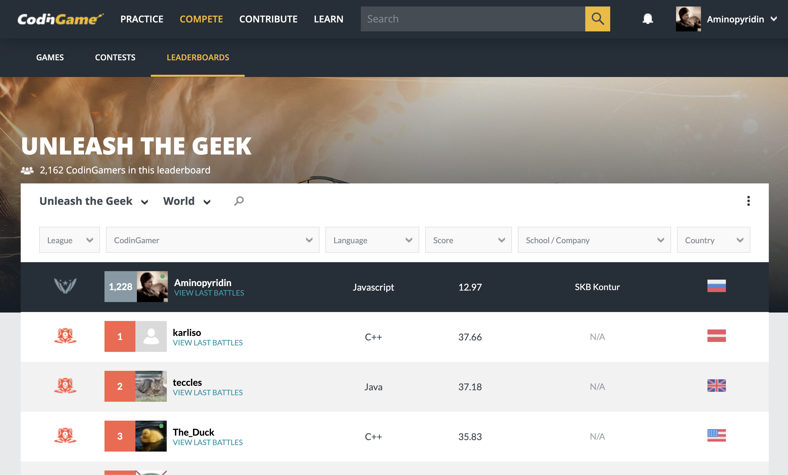


***

### CodinGame: в чем польза?

<ul>
<li class="fragment">эффективные решения
<li class="fragment">...которые лучше, чем у других
</ul>

---

## ICFP Contest

***

### ICFP Contest

<ul>
<li class="fragment">Криурочен к International Conference on Functional Programming
<li class="fragment">Команда любого размера
<li class="fragment">72 часа
<li class="fragment">Каждый год организовывают разные люди
<li class="fragment">Результаты объявляются через 2 месяца на конференции ICFP
<li class="fragment">Контур играет уже лет 10
</ul>

***

### ICFPC 2017

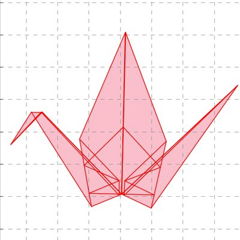

***

### ICFPC 2018

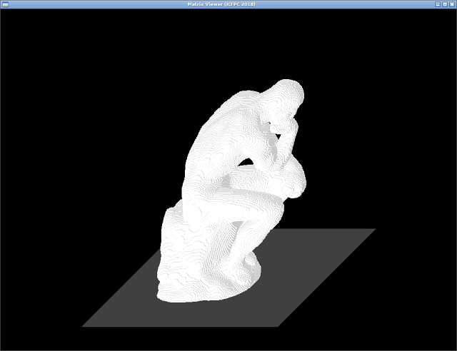


***

### ICFPC 2019

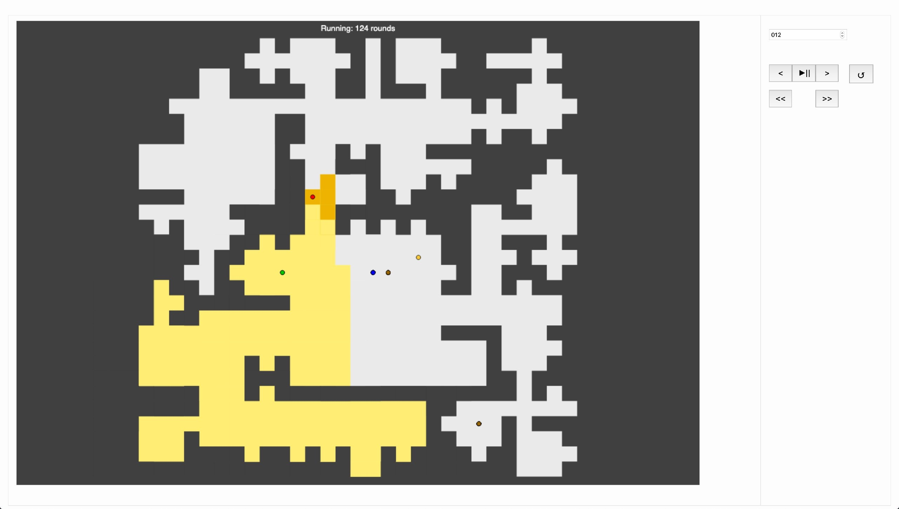

***

### ICFPC 2019 для меня

24 тысячи строк js, скомпилированных из scala

```js
function Ga(a, b) {
    var c = b | 0;
    if (c === b && -Infinity !== 1 / b) return c;
    if (a.Kg) a.wn[0] = b, a = new Xf(a.xj[a.Rn] | 0, a.xj[a.An] | 0); else {
        if (b !== b) a = !1, b = 2047, c = +Math.pow(2, 51);
        else if (Infinity === b || -Infinity === b) a = 0 > b, b = 2047, c = 0;
        else if (0 === b) a = -Infinity === 1 / b, c = b = 0;
        else {
            var e = (a = 0 > b) ? -b : b;
            if (e >= +Math.pow(2, -1022)) {
                b = +Math.pow(2, 52);
                c = +Math.log(e) / .6931471805599453;
                c = +Math.floor(c) | 0;
                c = 1023 > c ? c : 1023;
                var f = +Math.pow(2, c);
                f > e && (c = -1 + c | 0, f /= 2);
                f = e / f * b;
                e = +Math.floor(f);
                f -= e;
                e = .5 > f ? e : .5 < f ? 1 + e : 0 !== e % 2 ? 1 + e : e;
                2 <= e / b && (c =
                1 + c | 0, e = 1);
                1023 < c ? (c = 2047, e = 0) : (c = 1023 + c | 0, e -= b);
                b = c;
                c = e
            } else b = e / +Math.pow(2, -1074), c = +Math.floor(b), e = b - c, b = 0, c = .5 > e ? c : .5 < e ? 1 + c : 0 !== c % 2 ? 1 + c : c
        }
        c = +c;
        a = new Xf(c | 0, (a ? -2147483648 : 0) | (b | 0) << 20 | c / 4294967296 | 0)
    }
    return a.W ^ a.ka
}
```

***

### ICFPC: в чем польза?

<ul>
<li class="fragment">Может потребоваться делать что угодно:<ul><li class="fragment">Писать 3д-визуализацию
<li class="fragment">Разбираться в обфусцированном js, скомпилированном из scala
<li class="fragment">Настраивать деплой</ul>
<li class="fragment">Навык принятия решений: <ul><li class="fragment">Писать свой визуализатор или доработать организаторский?
    <li class="fragment">Писать тесты или так сойдет?
    <li class="fragment">Посадить отдельного человека решать дополнительную задачу или проигнорировать ее?
</ul>
</ul>

***

## ICFPC 2020 организовываем мы!


---

### Итак, мой рецепт изучения алгоритмов

<ul>
<li class="fragment">Читать книги, учиться на онлайн-курсах
<li class="fragment">Решать задачки с CodinGame/codewars каждый день
<li class="fragment">Участвовать в контестах
</ul>

***

### Польза

<ul>
<li class="fragment">Теперь я точно знаю, что я программист
<li class="fragment">Мои коллеги тоже в курсе
</ul>

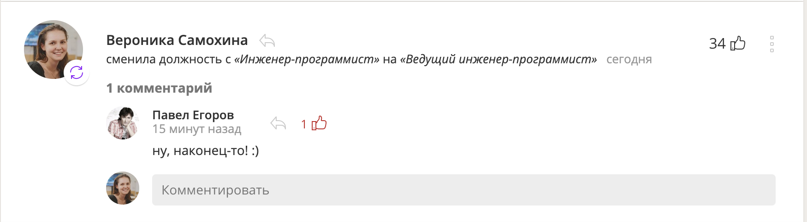

---

### Как начать:

<ul>
<li class="fragment">Прочитать статьи про то, как начать
<li class="fragment">Начать решать задачки на CodinGame
<li class="fragment">1 декабря — Advent Of Code!
<li class="fragment">В марте — CodinGame
<li class="fragment">В июле — ICFPC 2020
</ul>

---

### Контакты

<div class="columns">
    <div style="margin-right: 40px"><ul>
        <li>Telegram: <a href="#">@Aminopyrodin</a>
        <li>Instagram: <a href="#">@aminopyrodin</a>
        <li>Twitter: <a href="#">@aminopyridin</a>
        <li>Все ресурсы: <a href="http://bit.ly/wsd-contests" style="white-space: nowrap;">http://bit.ly/wsd-contests</a></ul>
    </div>
    <div style="flex-shrink: 0"></div>
</div>

</script></section>

</div></div>
</body>
</html>